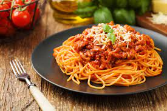

Odin Recipes

Description
Macarrão a bolonhesa é com um molho feito com carne bovina moída, tomate e outros adicionais, tradicionalmente preparado para acompanhar tagliatelle fresco (tagliatelle al ragù) ou lasanha
Ingredientes
- 2 colheres (sopa) de óleo
- meio quilo de carne moída
- 1 cebola picada
- 4 tomates sem pele, sem sementes e picados
- 1 lata de polpa de tomate
- 2 tabletes de MAGGI® Caldo Carne
- 1 xícara (chá) de água quente
- 1 pacote de macarrão tipo espaguete cozido
Modo de preparo
- Em uma panela, aqueça o óleo e refogue a carne até dourar.
- Junte a cebola, os tomates e deixe refogar até murchar.
- Acrescente a polpa de tomate e os tabletes de MAGGI Caldo, dissolvidos em água quente.
- Deixe cozinhar por cerca de 10 minutos, ou até apurar o molho.
- Sirva com o macarrão cozido.